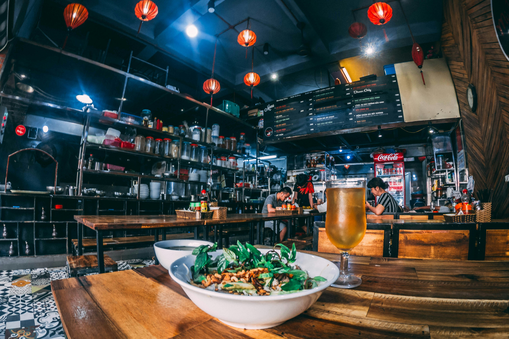

SOA Restaurant

Address: 19 Nguyen Huu Tho, Tan Phong Ward, District 7, Ho Chi Minh City.
Welcome to our Vietnamese restaurant, where we offer an authentic taste of Vietnam through our diverse menu featuring traditional dishes, all prepared with fresh ingredients and a touch of Vietnamese hospitality
Gallery

Phở Bò: A traditional Vietnamese beef noodle soup known for its fragrant broth and hearty noodles.